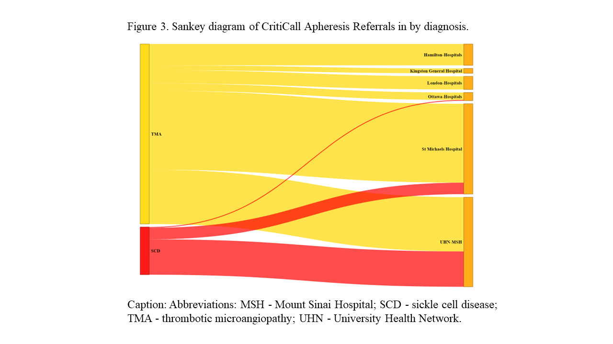
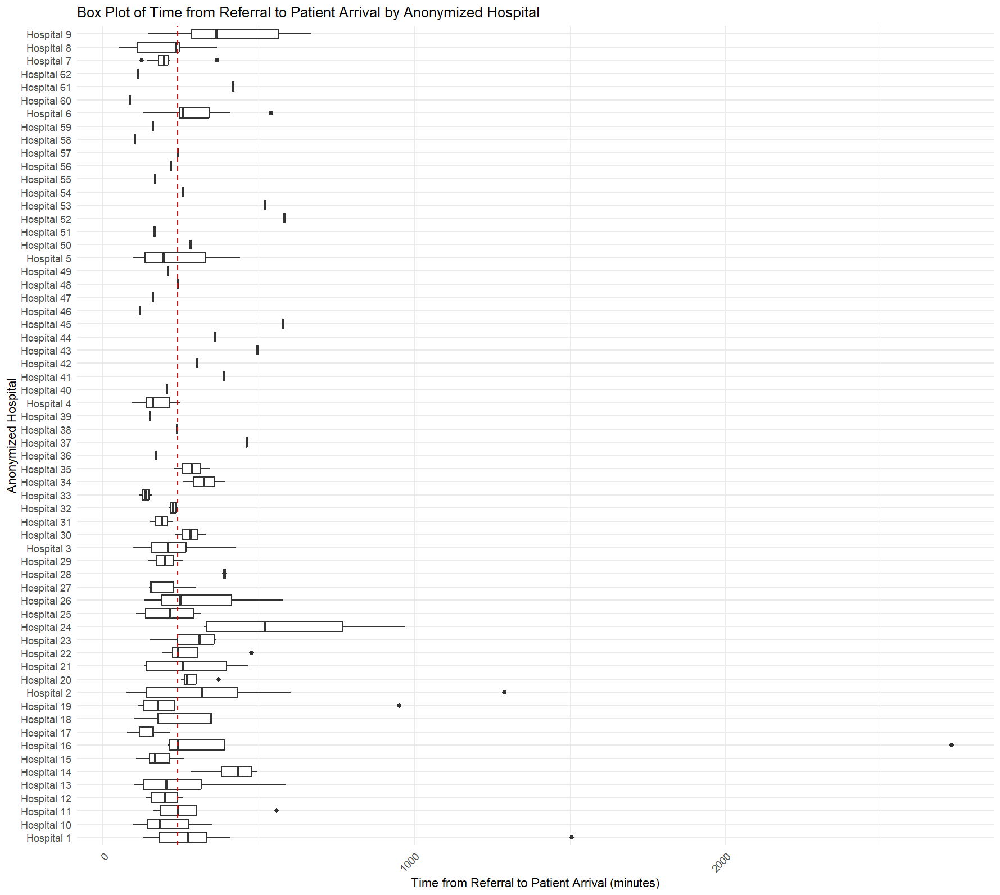
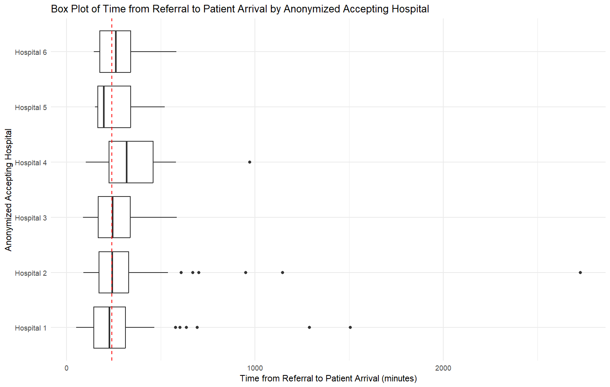
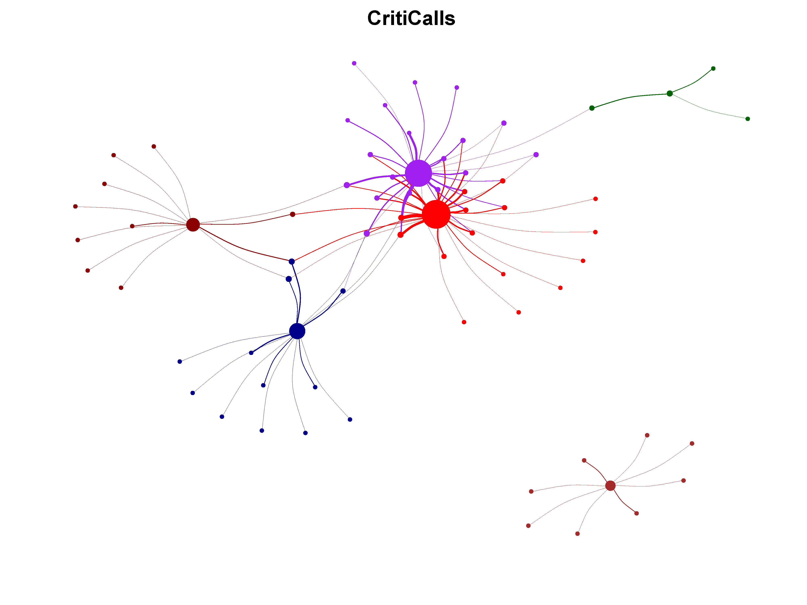

This page contains additional figures for the analysis of CritiCall Apheresis Consults in Ontario, Canada.
Figure: Flow diagram depicting allocation of referrals by accepting apheresis centers
Figure: Boxplot depicting range of referral to arrival times by referring hospitals
Figure: Boxplot depicting referral to arrival time by accepting apheresis center
Figure: Weighted network diagram showing all hospitals and flow of referrals within our referral network
 Click here to provide feedback to authors